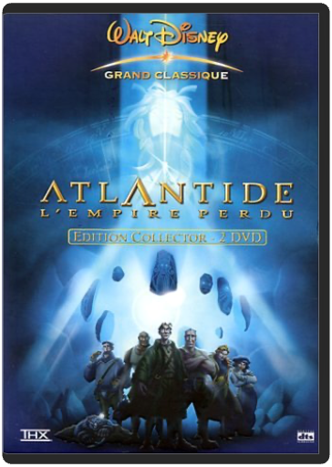
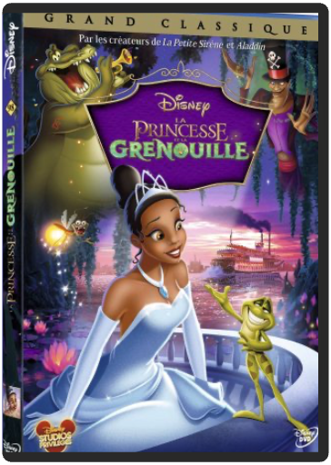

Privé de camp de vacances avec Andy parce que son bras est déchiré, Woody est relégué sur l'étagère du garçonnet. S'échappant de la maison pour sauver un autre jouet d'un vide-grenier, un collectionneur l'aperçoit et le kidnappe...  walt disney, 61 : atlantide, l'empire perdu - édition collectorwalt disney Attention, Atlantide en vue. Milo, un jeune cartographe aventurier dans l'âme, mais beaucoup moins sur le terrain, se retrouve à la tête d'une équipe en quête de la célèbre cité perdue. Après Kuzco, l'empereur mégalo, les studios Walt Disney continuent à distiller un humour moderne et irrévérencieux dans leurs nouveaux dessins animés par le biais de personnages plutôt cyniques. Ici, une vieille acariâtre fumant cigarette sur cigarette. Là, Gaëtan, un homme répugnant mais sympathique, se prenant pour une taupe. Entre ces personnages étonnants et survoltés évoluent le jeune scientifique Milo et la belle Kida, princesse de l'Atlantide. Les réalisateurs Gary Trousdale et Kirk Wise insufflent un vent de magie et un souffle épique digne des Aventuriers de l'arche perdue, une pointe d'amour et un humour qui touchera aussi bien les petits que les grands, les scènes drôles possédant plusieurs niveaux de lecture. Un grand dessin animé familial. —Marc Maesen  Voilà un film hilarant qui aura en outre le mérite de rassurer les plus jeunes. En effet, les "terrifiantes" créatures de Monstres et Cie, qui tirent leur énergie des hurlements d'effroi des bambins, ont un léger défaut dans la cuirasse : ils ont peur des enfants. Une peur panique, qui prend une tournure dramatiquement drôle lorsqu'une (toute) petite fille parvient à se faufiler dans leur monde. Après une paire de Toy Story et l'excellent 1001 pattes, les équipes de Pixar réalisent encore une fois un coup gagnant avec cette histoire de monstres parfaitement réussie. Animation parfaite, personnages attachants – au premier rang desquels une adorable boule de poils bleus –, scénario prenant et surtout humour omniprésent, tout concourt à faire de ces 90 minutes un pur moment de bonheur. Sans doute destiné à un public plus jeune que ces prédécesseurs, Monstres et Cie séduira néanmoins également les adultes, notamment grâce à ce DVD en tout point parfait et qui permet en outre de profiter du film dans une version originale au casting ahurissant (John Goodman, Billy Crystal, James Coburn [!], Steve Buscemi). —Michaël Cuq |  walt disney, 98 : la princesse et la grenouillewalt disney Sur les bords du Mississippi, dans les années 20, la Nouvelle-Orléans vibre au son du jazz et de la romance. Pourtant, la belle Tiana n'a pas une minute a perdre en rèvant a l'amour. Un séduisant jeune prince, Naveen, vient d'arriver en ville, attiré par sa passion du jazz. Sa richesse et son rang attirent le malfaisant Dr Facilier, un sorcier qui pratique la magie noire. Ne parvenant pas a profiter de la fortune du prince, Facilier se venge, et le transforme en grenouille. Naveen persuade Tiana de lui donner un baiser pour qu'il retrouve sa forme humaine. Mais le résultat n'est pas celui espéré : c'est la jeune fille qui est a son tour métamorphosée en batracienâ?ŠÂ  Les créateurs des très populaires films Toy Story ouvrent à nouveau le coffre à jouets et invitent les spectateurs à retrouver le monde délicieusement magique de Woody, Buzz et leurs amis. Woody et Buzz savaient bien que leur cher Andy allait grandir un jour, mais que faire lorsque ce jour est arrivé ' Dans ce troisième chapitre, Andy se prépare à partir pour l'université, et ses fidèles amis les jouets se posent beaucoup de questions quant à leur avenir. Lee Unkrich (coréalisateur de Toy Story 2 et du Monde de Nemo) réalise ce film très attendu, et Michael Arndt, le scénariste oscarisé de Little Miss Sunshine, apporte son talent unique et sa sensibilité pleine d'humour à l'histoire. |

Julien
Collection Total:
1 866 Items
1 866 Items
Last Updated:
Feb 24, 2021
Feb 24, 2021


 Made with Delicious Library
Made with Delicious Library